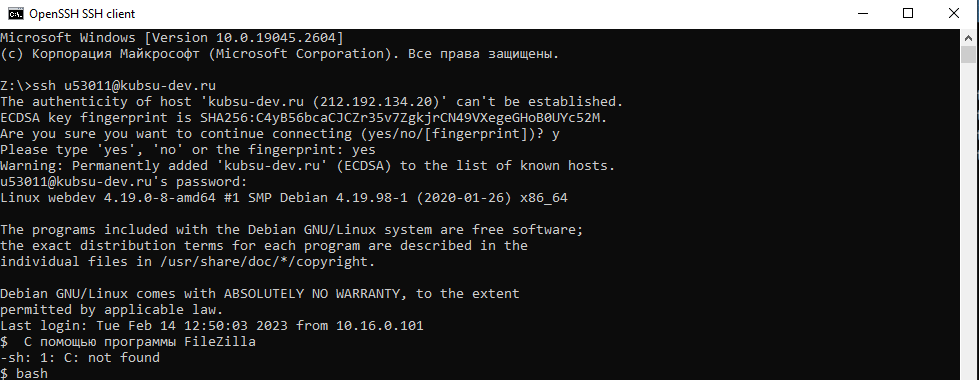
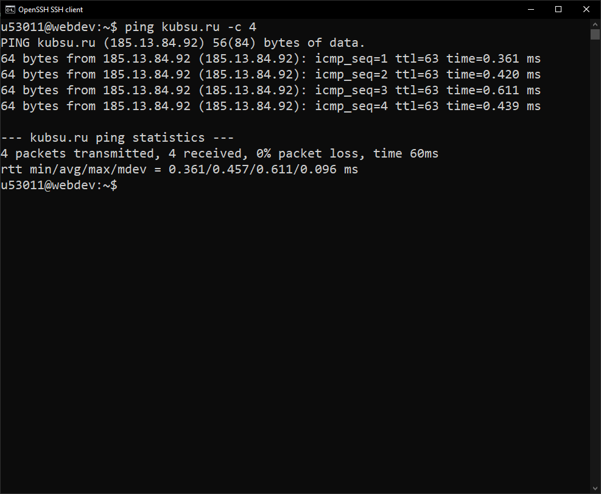
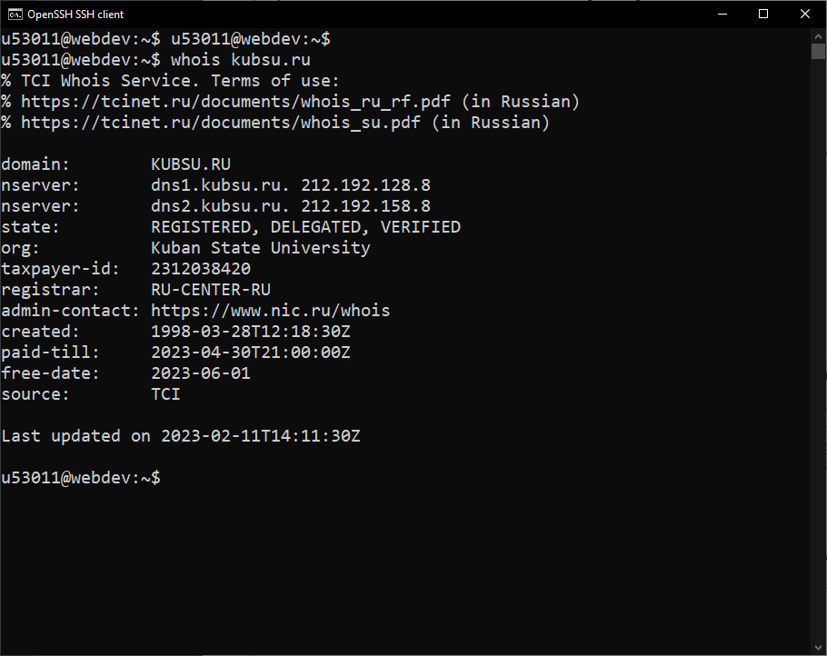
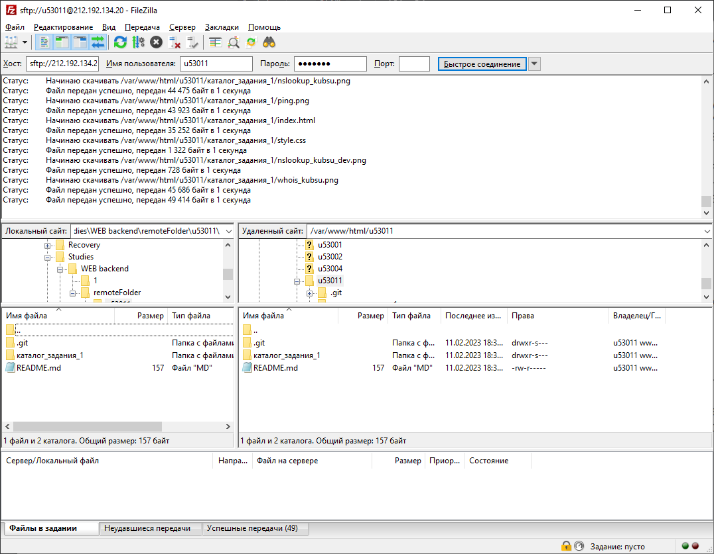

выполняем вход на учебный сервер с помощью командной строки командой ssh
выполняем команду ping с учебного сервера, чтобы узнать ip-адрес домена kubsu.ru
 выполняем команду nslookup для домена kubsu.ru с параметрами -A для определения ip-адреса домена и -MX для определения ip-адреса почтового шлюза
выполняем команду nslookup для домена kubsu.ru с параметрами -A для определения ip-адреса домена и -MX для определения ip-адреса почтового шлюза выполняем команду nslookup для домена kubsu-dev.ru с параметрами -A для определения ip-адреса домена и -MX для определения ip-адреса почтового шлюза
выполняем команду nslookup для домена kubsu-dev.ru с параметрами -A для определения ip-адреса домена и -MX для определения ip-адреса почтового шлюзавыполняем команду whois для домена kubsu.ru для получения регистрационных данных
 выполняем команду whois для домена kubsu-dev.ru для получения регистрационных данных
выполняем команду whois для домена kubsu-dev.ru для получения регистрационных данных клонируем репозиторий с помощью команды git clone
клонируем репозиторий с помощью команды git cloneс помощью программы FileZilla соединяемся с сервером по протоколу FTP и копируем файлы из директории /var/www/html/u53011 на локальный компьютер
 обновляем репозиторий с помощью команды git pull
обновляем репозиторий с помощью команды git pullДля клонирования репозитория используется команда "git clone <ссылка на репозиторий>". Для навигации по файловой системе на сервере используются команды: cd для перемещения, ls для просмотра окружения.